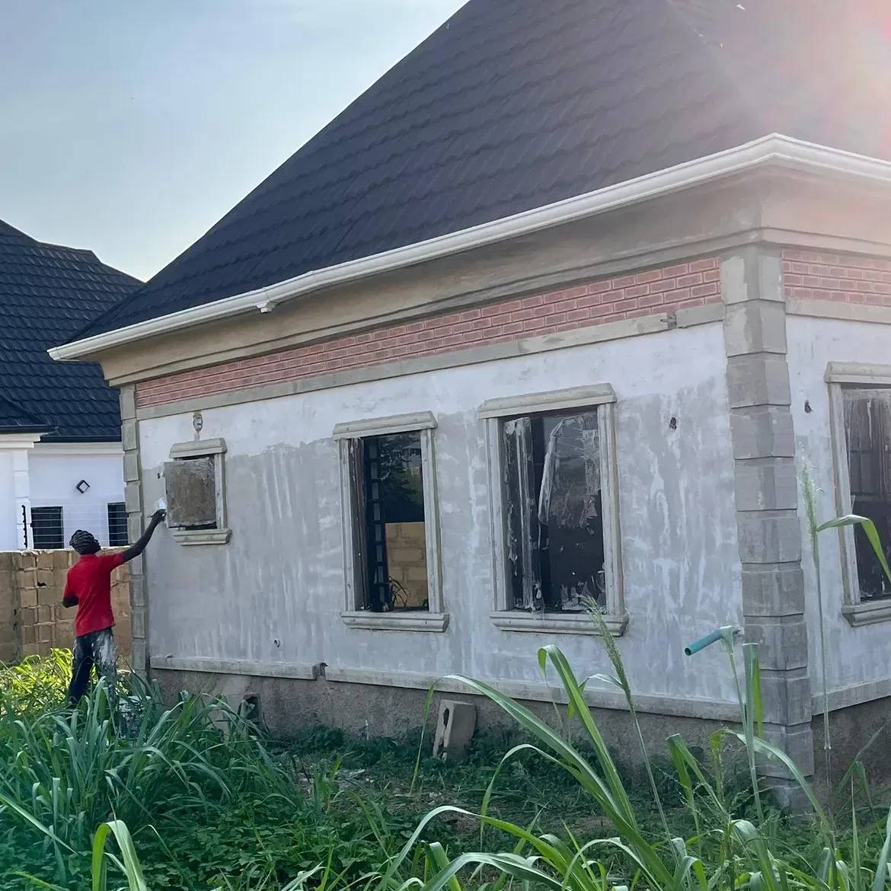

Photographed as delivered.
No staging, no filters. Ceilings, exteriors and interiors from recent Classik Finishes jobs.
Gallery
Recent work
Before & after
Proof that a Classik finish changes everything.
One bungalow exterior, from bare render to handover.
